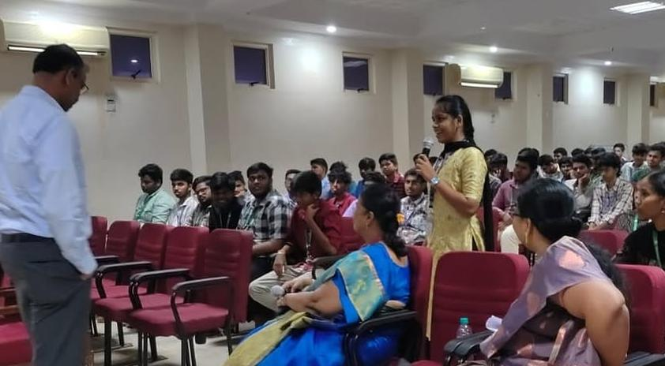
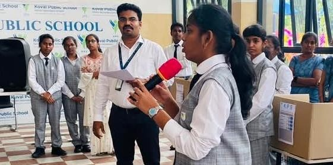
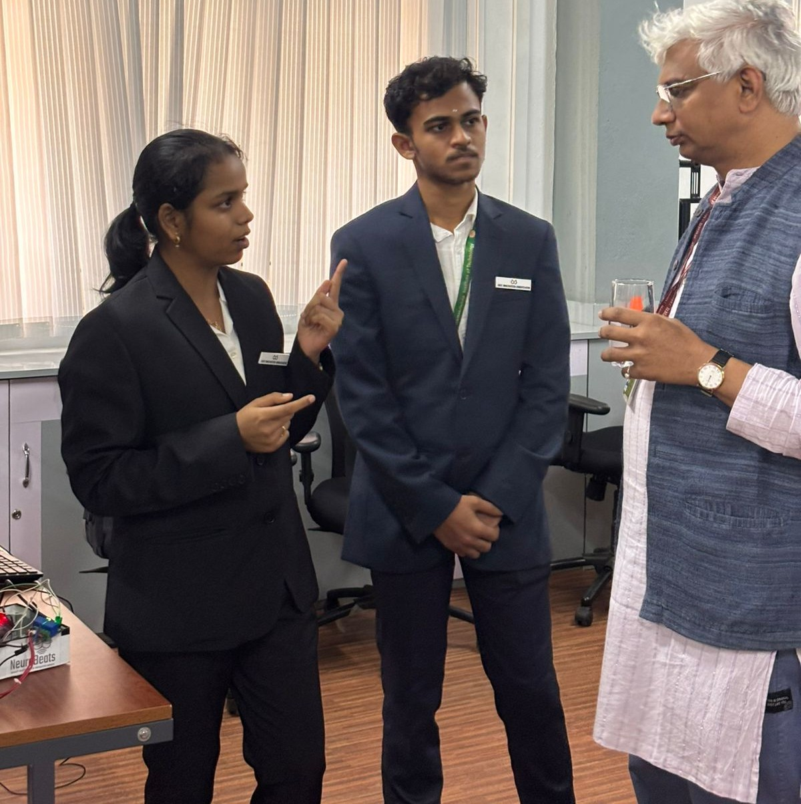
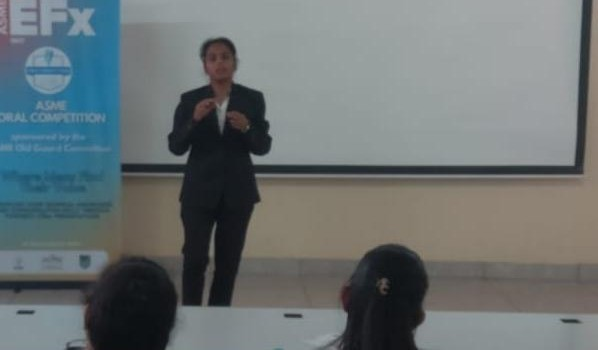

Engineering at the intersection of core software and market innovation.

The Journey Matrix
A highly interactive, chronological roadmap tracing academic foundations, key engineering breakthroughs, and outreach leadership.
01 / Academic Foundation
I started with a strong academic drive, scoring a 96% in my 10th grade CBSE. I faced a major personal dilemma trying to choose between Computer Science and Biology, ultimately choosing Biology. That intense analytical training carried through to my 12th grade, where I secured a 91.2% in CBSE, cleared national competitive entrance exams, and ultimately made the definitive leap into the engineering field.


02 / Engineering Pivot
Coming from a non-programming background, my entry into software was an uphill struggle. I spent countless hours wrestling with logical errors and compiler configurations in the terminal just to understand basic structures. However, forcing myself through that steep learning curve became my biggest advantage; it taught me to build software engines entirely from first principles and write custom web logic from scratch without relying on heavy external frameworks.
03 / The Human Element
Beyond writing code, my core strength lies in working with people. I bring a naturally friendly, approachable energy to engineering spaces, making it seamless to coordinate team workflows and keep everyone aligned during development. My natural communication skills drive my executive leadership positions as a Public Relations Head and Student Innovation Ambassador, where I love translating complex system logic into high-impact, accessible community stories.

Academic Roadmap
A simple, chronological overview of my educational milestones, transitions, and current engineering studies.
Achieved a 96% score in 10th grade CBSE, navigating a definitive academic choice to focus deeply on analytical structures.
Maintained a high standard of academic rigor through senior secondary schooling to graduate with a 91.2% score in 12th grade CBSE.
Currently pursuing undergraduate studies at Sri Ramakrishna Institute of Technology.